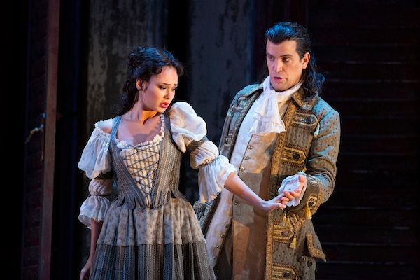
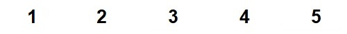

Ar Baron
Le Baron
The Baron
Chant collecté par Théodore Hersart de La Villemarqué
dans le 2ème Carnet de Keransquer (p. 106).


1° MELODIES "AR GEMENEREZ" (MP3)
Balayer les numéros 1 à 5 pour voir les partitions;
Don Juan et Zerline (Luca Pisaroni & Aida Garifullina, MET, 2019)
2° SON MARIVON (Chanson de Maryvonne)
|
A propos de la mélodie Maurice Duhammel a collecté dans "Musiques bretonnes" (1913) 4 mélodies diférentes accompagnant le chant "Kemenerez Lannuon" (La couturière de Lannion) publié par Luzel (François-Marie), dans ses "Soniou Breiz-Izel", 1874-1890, Tome II, p. 140-141. 1° Version du Trégor:collectée à Trévérec (Trevereg, 22), avant 1913. Position dans louvrage : p. 192, chant n° 378. 2° Version de Haute Cornouaille, collectée à Plonévez-du-Faou (Plonevez-ar-Faou, 29) , avant 1913, Position dans louvrage : p. 193, chant n° 379. 3° Version de Haute Cornouaille, collectée à Pleyben (Pleiben, 29), avant 1913. Interprète Yves Menguy, Position dans louvrage : p. 193, chant n° 380. 4° Version de Haute Cornouaille, collectée à Bohars (Bocharzh, 29) avant 1913. Chanté par X. Boharz. Enregistrement Phono: Yvon Croq.Position dans louvrage : p. 194, chant n° 381 Le site https://tob.kan.bzh/chant-00390.html donne, outre le chant alterné "Son Marivon" ci-dessus, 5° une cinquième version notée par Francis Gourvil, interprétée par Joseph Laurent et publiée dans " Kanaouennou Breiz-Vihan, 1911", p.94-96. Elle est intitulée "Ar Gemenerez, La couturière". La mélodie est à peu près identique à celle d'un chant bilingue français-vannetais collecté dans l'ancienne commune de Keryado (Keriadeu) qui constitue depuis 1947 un quartier de Lorient. A propos du texte La page 106 commence par ces mots: "Le Baron (de St-Martin) faite par Ponionek de St Hernin [8 km au sud-ouest de Carhaix], demeurant Kastell an Tarv (surnom)" Il existe deux localités proches l'une de l'autre Saint-Martin-des-Champs et Plouezoc'h dont dépend l'Île "Château (du) Taureau" (Kastell-an-Tarv) dans le golfe de Morlaix. Cependant, comme il est dit qu'il s'agit du surnom de la demeure de l'auteur du chant, il faut certainement chercher ailleurs la résidence de l'odieux Baron, sujet de ce chant. Le nom de famille "Poignonec" est toujours représenté à Saint-Hernin. Il est remarquable que plusieurs versions du chant commencent par "Ur gemenerez yaouank a barrez Lannuon", "une jeune couturière de la paroisse de Lannion" et portent le titre "Kemenerez Lannuon", La couturière de Lannion. Dans la classification Malrieu ce chant porte le N° M-00390,le titre critique "Ar gemenerez yaouank hag an aotrou", "La jeune couturière et le seigneur", "The young dressmaker and the seigneur". Le thème est " Les filles trompées, déshonorées ; Aventures, galanteries, débauches". Le chant est résumé ainsi sur le site https://tob.kan.bzh/chant-00390.html: " Une jeune couturière de Lannion va porter des chemises au baron. « Ouvrez-lui et apportez du vin ». « Bonjour, Marion, vous serez ma femme ». « Hélas ! Je suis de trop petite lignée pour être femme dun baron ». « Votre beauté vaut haute lignée ». La jeune couturière disait dans le lit du baron : « Quelle belle destinée ! Si je ne sais le français, jaurai une servante qui parlera pour moi, un page pour porter la queue de ma robe ». Le lendemain matin, le baron dit en riant : « Vous me coudrez dautres chemises. Si vous craignez les reproches de vos parents, restez comme servante pour préparer mon lit et balayer ma chambre ». Ce site présente 8 versions et 9 occurrences de ce chant. |
About the tune Maurice Duhammel collected in "Musiques Bretonnes" (1913) 4 different melodies accompanying the song "Kemenerez Lannuon" (The Seamstress of Lannion) published by Luzel (François-Marie), in his "Soniou Breiz-Izel", 1874-1890, Tome II, p. 140-141. 1 ° Trégor version: collected in Trévérec (Trevereg, 22), before 1913. Position in the book: p. 192, song no. 378. 2 ° Upper Cornouaille version, collected at Plonévez-du-Faou (Plonevez-ar-Faou, 29), before 1913, Position in the book: p. 193, song no. 379. 3 ° Upper Cornouaille version, collected at Pleyben (Pleiben, 29), before 1913. Interpreter Yves Menguy, Position in the work: p. 193, song no 380. 4 ° Upper Cornouaille version, collected at Bohars (Bocharzh, 29) before 1913. Sung by X. Phono recording by Yvon Croq. Position in the book: p. 194, song no. 381 The site https://tob.kan.bzh/chant-00390.html gives, beside the above alternating song "Son Marivon", 5 ° a fifth version noted by Francis Gourvil, interpreted by Joseph Laurent and published in "Kanaouennou Breiz-Vihan, 1911", p.94-96. It is entitled "Ar Gemenerez, The seamstress". The melody is almost identical to that of a bilingual French-Vannes dialect song collected in the former commune Keryado (Keriadeu) which has been a district of Lorient since 1947. About the lyrics Page 106 begins with these words: "The Baron (of St-Martin) made by Ponionek from St Hernin [8 km south-west of Carhaix], liviing at Kastell an Tarv (a local placename)" There are two localities close to each other Saint-Martin-des-Champs and Plouezoc'h to which the Island "Château (du) Taureau" (Kastell-an-Tarv) in the Gulf of Morlaix belongs. However, as stated in the ms, this is a local name referring to the author of the song's dwelling. Therefore it is certainly necessary to look elsewhere for the residence of the nefarious Baron. The family name "Poignonec" is still in use in Saint-Hernin. It is remarkable that several versions of the song should begin with "Ur gemenerez yaouank a barrez Lannuon", "a young seamstress in the parish Lannion" and bear the title "Kemenerez Lannuon", The seamstress of Lannion. In the Malrieu classification, this song has the item number M-00390, the critical title "Ar gemenerez yaouank hag an aotrou", "The young seamstress and the lord". The theme is "Girls deceived or dishonored; Adventures, gallantries, debauchery". The song is summarized as follows on the site https://tob.kan.bzh/chant-00390.html: "A young seamstress from Lannion is delivering fresh shirts to the baron. -" Open to her and bring wine ". - "Hello, Marion, will you be my wife". - "Alas! I am too insignificant to be the wife of a baron." - "Your beauty is worth high lineage". The young seamstress said in the baron's bed: - "What a beautiful destiny! Since I don't know French, I will have a servant who will speak for me, a page to wear the tail of my dress." The next morning, the baron said with a laugh: - "You will sew me other shirts. If you fear the reproaches of your parents, you may stay as a servant to prepare my bed and sweep my room. This site presents 8 versions and 9 occurrences of this song. |
|
BREZHONEK page 106 Le Baron (de St-Martin) faite par Ponionek de St Hernin demeurant Kastell an Tarv (surnom) 1. Selaouit hag a glefec'h ha a glefec'h kanañ Hag a glefec'h ur zon a-nevez 'vit ar bloaz 2. Zo graet d'ur gemenerez he hanv Marivon, 'Deus gwriet dek rochedoù dan Aotrou ar Baron. 3. 'Vit an Aotrou Baron, gwriet rochedoù koant, He-deus gwriet gant neud seiz, brodet gant neud arc'hant, 4. Ha pa 'deus graet ar roched ha lakaet 'n ur pakad kloz, Hag a zo aet d'o chas dar ger, da zek eur doch an noz. 5. (OIa sur, emezon-me, c'hwi palafregner,) Hag a erruas [ul lakez] hag ur palafregner, 6.Eurvad [deoc'h lakez ha] doc'h-c'hwi palafregner, _ Hag a c'houlennas digante "'Mañ ar Baron er ger ?" 7. - Piv a sko war ma dorejoù, dar choulz-se d'eus an noz?. - Na me a zo Marivonig gant rochedoù graet kloz. - 8. - Na zigorit an nor, digorit prestamant, Da aozañ din ma gwele, pa din prez zo, mar d'eo koant. - 9. Ha pa yae Marivonig gant ar viñs dan nech, Ar baron sachas war he dorn, ken a strakas he brech. 10. - Mar ho-peus graet rochedoù, ha rochedoù graet koant. - Bremañ e c'hav din, paeit en aour, pe 'n en arc'hant. 11. - Daoust ha deoch, Marivonig, pe an aour pe an archant, Pe a gouskfec'h un nozvezh gant ur baron yaouank? 12. - Me n'am-eus ket ezhomm, Aotrou, doch aour hag d'eus arc'hant. Gwell e ve ganin kousket gant ar baron yaouank, - 13. Na pa yae Marivonig gant ar gwintoù dan traoñ Oa karget de(zh)i he faner a figez hag a graoñ.... p. 107 / 56 14. Pa oa erru e kambr ar baron, hi a zeu da cheñch liv, Ar baron, tostik dezhi gant aon dimeus ar riv! ******** Exemple de suite tiré de la version chantée par Fañch Periou et Guirec Connan: Son Marivon (repertoire de Yann Poëns) a. 'Benn un tri miz goude-se, pe un tri miz hanter Rinset oa he godelloù, karget oa he faner b. Pa oa ar Varivonig 'vont d'ar gêr dreist ar wazh Risklet 'oa he div votez, kouezhet war he revr noazh c. Pa oa ar Varivonig o kontan he zroioù E oa ar baron fripon 'toull an nor o selaou d. - M'az pije ma dikriet 'vel m'az peus ma meulet Na bi ken ma daoulagad, 'pije gwelet er bed. - KLT gant Christian Souchon |
TRADUCTION FRANCAISE page 106 Le Baron (de St-Martin) faite par Poignonec de St Hernin demeurant Kastell an Tarv (surnom) 1. Vous plairait-il d'entendre, de m'entendre chanter Une chanson nouvelle qu'on vient de composer?. 2. Sur une couturière, Maryvonne est son nom, Qui cousit dix chemises pour Monsieur le Baron. 3. Pour cet aristocrate, quel ouvrage élégant, Cousu de fil de soie, brodé de fil d'argent! 4. Les chemises finies, elle en fait un paquet, Le soir même à dix heures elle va les livrer. 5. Elle cogne à la porte pour qu'on la laisse entrer Un laquais se présente et un palefrenier 6. Le bonsoir je vous souhaite, laquais, palefrenier! Le baron, votre maître, pourrais-je lui parler?" 7. - Qui donc frappe à ma porte? L'heure est bien avancée! - Maryvonne avec des chemises juste achevées 8. - Ouvrez-lui donc la porte! Ouvrez-donc vivement! Préparez mon lit, vite! Son visage est charmant. - 9. Elle gravit les marches de l'escalier tournant , Si fort sur son bras tire le baron qu'on l'entend 10. Craquer. - Que ces chemises sont jolies! Oui, vraiment! Il est temps qu'on les paye en or ou bien en argent. 11. Votre choix, Maryvonne? Or? Argent? Ou sinon Une nuit dans la couche d'un tout jeune baron? 12. - Monseigneur, peu m'importe votre or ou votre argent, Je préfère dormir avec un jeune baron, - 13. Mais lorsque Maryvonne redescend de guingois Sa corbeille était pleine de figues et de noix.... p. 107 / 56 14. En entrant dans la chambre, Maryvonne pâlit: Le baron tout près d'elle, le frileux, se blottit! ******** Exemple de suite tiré de la version chantée par Fañch Periou et Guirec Connan: "Son Marivon" (répertoire de Yann Poëns) a. Alors trois mois s'écoulent, peut-être quatre mois Si ses poches sont vides, son panier ne l'est pas! b. La pauvre Maryvonne, en traversant le ruisseau Glisse, elle se retrouve le derrière dans l'eau. c. Tandis qu'elle raconte à tous ses tribulations Sur le pas de sa porte, il y a le jeune baron d. Qui dit: - Elle me blâme, après m'avoir adulé. L'inverse et nous ne nous serions jamais rencontrés! - Traduction: Christian Souchon (c) 2020 |
ENGLISH TRANSLATION page 106 The Baron (of St-Martin) Made by Poignonec of St Hernin Living at Kastell an Tarv (a placename) 1. Listen and you shall hear, and you shall hear me sing Shall hear me sing a song just recently composed. . 2. Composed on a seamstress who is named Maryvonne, Who has sewn ten shirts for His Lordship the Baron. 3. His Lordship the Baron, ten fine shirts she has sewn, Sewn them with silk thread, embroidered with silver thread! 4. When the shirts were finished, wrapped them carefully up, And left at ten o'clock night to deliver them. 5. She knocked on the door asking for admittance A lackey showed up first and then a stableboy 6. Good evening to you both, lackey and stableboy! Is His Lordship at home and may I speak to him? " 7. - Who's knocking on my door at this hour of the night? - It's me, Maryvonne with shirts that I've just finished 8. - Open the door for her! Open the door quickly! Make my bed! I'm in a hurry! Such a nice girl - 9. When she climbed the steps of the spiral staircase, He stretched her arm so hard that the joint has cracked. 10. How pretty these shirts are! Really pretty they are! It's time to pay for them in gold or in silver. 11. - What's your choice, Maryvonne? Gold or silver or else A night in the bed of a handsome young baron? 12. - For your gold or silver, my Lord, I do not care Sleeping with a young Lord is what I should prefer - 13. When Maryvonne staggered down the spirl staircase Her basket it was full of figs and hazelnuts ... p. 107 / 56 14. When entering the room, Maryvonne turned pale: The chilly baron rushed to snuggle against her. ******** Example of continuation taken from the version sung by Fañch Periou and Guirec Connan: "Son Marivon" (Yann Poëns' repertoire) at. And then three months went by, or three months and a half Her pockets were empty, alas her womb was not! b. Maryvonne on her way home had to cross a brook Both of her shoes slipped off. Her nacked bottom got drenched vs. When poor Mariyvonne was telling her tale of woe The young baron on his doorstep was listening, too. d. - If you had blamed me instead of praising me Never would the paths of the both of us have crossed. - |
NOTES
|
La "morale" de l'histoire Si La Villemarqué nous apprend le nom de l'auteur, (ne serait-ce pas plutôt celui du chanteur ou d'un "réfecteur" d'un chant existant?), il n'a pas noté le texte en entier, sans doute choqué par le rôle joué par le Dom Juan breton dans cet histoire, qui comme son prédécesseur, ne donne pas une image flatteuse de l'aristocratie. La strophe (a), absente de la version La Villemarqué, est présente dans la plupart des autres:
Comme le personnage de Molière, c'est non seulement un suborneur qui fait boire du vin à sa victime et lui fait des promesses chimériques (elle deviendra baronne, aura une servante parlant français...), mais encore un voleur, en l'occurrence qui oublie de payer les chemises cousues par la jeune femme enceinte de ses oeuvres. On mesure combien les mentalités ont évolué, si l'on réfléchit que ce chant était classé parmi les "sonioù", les chansons légères ou comiques. Qu'une toute jeune fille de la classe laborieuse, comme on disait autrefois, soit engrossée par un baron, bien loin de susciter la réprobation ou l'indignation, provoquait jadis semble-t-il l'hilarité des foules! D'ailleurs, baron ou pas, les proverbes faisaient preuve de bienveillance envers les coureurs de jupons. Telle était la nature des hommes, aux filles de se méfirer. Ainsi ce proverbe de Châteaulin:
Enfin, la plupart des versions, font de la couturière une victime consentante. C'est toujours d'elle-même, semble-t-il, qu'elle part à dix heures du soir livrer les chemises. Dans certaines versions (ex: Periou - Conan) elle se présente comme la "bienaimée" (mestrezig) du baron:
On notera qu'elle tutoie le baron, ce qui est très rare en breton. Dans d'autres, elle déclare préférer la couche du baron à un paiement en or ou en argent... De sorte que le public entend sans s'émouvoir le plaidoyer de ce personnage cynique qui déclare à la fin de plusieurs versions (ex: Periou - Conan):
En d'autres termes, "tout cela ne serais pas arrivé, si tu ne m'avais pas couru après..." Beaucoup des considérations sur l'osmose des classes sociales, la morale ambiante, etc., exposées à propos du chant k16. Marianne Le Masson s'appliquent au présent chant. Quelques caractéristiques des autres versions: La scène de séduction occupe les 4 dernières strophes
Elle comporte un refrain en français:
Ici c'est la couturière qui prend les devants. La fin de l'histoire est particulièrement affligeante.
Cette version est influencée par le chant Jannedig / Losaik (strophes 1-2 / 5-9) du 1er cahier de Keransquer (ou du recueil de H. Guillerm, Lojaik, str. 6-7). Si ce n'est que la perspective d'une bonne parlant français qui sert d'interprête à la baronne basse-bretone est un fantasme évoqué sur le mode ironique. De Penguern avait déjà fait ce rapprochement. De l'histoire de "Marionig on passe sans transition, dans son manuscrit, à celle de "Jannedic":
|
The moral of the story If La Villemarqué tells us the name of the author (or is it the name of the singer or of the "remaker" of an existing song?), he chose to omit the end of the text, as he was evidently shocked by the role played by the Breton Don Juan in this story, who like his famous predecessor, does not convey a very flattering image of the aristocracy. The stanza (a), absent from the La Villemarqué version, is present in most of the others:
Like the character in Molière's play, he is not only a predator who makes his victim drink wine and makes chimerical promises to her (she will become a baroness, will have a French-speaking servant ...), but also a thief, who in the present instance forgets to pay for the shirts made by the young woman he made pregnant. You can tell how much mentalities have changed, if you consider that this song is classified among the so-called "sonioù", i.e. "entertaining or funny songs". That a very young girl of the working class, as we used to say, was made pregnant by a baron, far from arousing disapproval, apparently provoked hilarity among the crowds! Besides, regardless if they were barons or not, the proverbs showed benevolence towards womanizers. It was in the nature of males, to deceive girls. So this proverb from Châteaulin doth a gracious truth enfold:
Finally, most versions make the seamstress a willing victim. It is always on her own initiative that she leaves at ten in the evening to deliver the shirts. In some versions (ex: Periou - Conan) she calls herself the "beloved" (mestrezig) of the baron:
Note that she speaks in the 2nd person to the baron, which is very rare in Breton. Among others, she declares that she prefers a sleep with the baron to a payment in gold or silver ... So that the public hears without being moved the plea of ??this cynical character who declares at the end of several versions (ex: Periou - Conan):
In other words, "all of this wouldn't have happened if you hadn't been chasing after me ..." Many of the considerations on the osmosis of social classes, ambient morals, etc., set forth in connection with song k16. Marianne Le Masson apply to the song at hand. Some features of the other versions: The seduction scene occupies the last 4 stanzas:
It includes a chorus in French:
In this song it is the seamstress who anticipates trouble. The end of the story is particularly distressing.
This version is influenced by the Jannedig / Losaik song (stanzas 1-2 / 5-9) in the 1st Keransquer notebook (or H. Guillerm's Collection, st. 6-7 , Lojaik). But in "Kemenerez Lannuon" the prospect of having a French speaking maidservant who serves as an interpreter for the Breton-speaking Baroness is meant as a joke. De Penguern had already made this connection. From the story of "Marionig" we pass without transition, in his manuscript, to that of " Jannedic ":
|
 Cliquer sur la case "+/-" pour afficher/ effacer le "Kemenerez Lannuon" de Penguern.
Cliquer sur la case "+/-" pour afficher/ effacer le "Kemenerez Lannuon" de Penguern.